UX audit: HR & Payroll
Data state found: the staging Organization has
0 employees, 0 shifts, 0 leave requests and no payroll runs, while the People screen lists 5 active staff accounts. So every list
view was seen only in its empty state. "One" and "40 employees" views,
the payslip drawer, the leave table and the terminate dialog were
not seen live; they are judged from the code and
labelled inferred. verified = I saw it in the running
app, or read the exact line of code that decides it. inferred =
reasoned from code or docs, not exercised.
1. Verdict
- Could the owner or office manager use it unaided today? To look around, yes: the four tabs are clear, labels are plain, Turkish, English and Arabic (RTL) all render and the back button is present. To run real staff records, no: there is no start date on registration and no way to edit an employee afterwards, so the first wage typo or raise cannot be handled.
- Biggest risk: payroll approval permanently locks a run built from deduction rates that the screen itself says are unapproved placeholders, and the confirm dialog says employees "will be paid" although nothing is paid by the system (HR-04).
- Second risk: the HR screen is shown to every role in the navigation. Front Desk does not hold "See staff records and payroll" in the role grid yet opens the page and is told "No employees registered" (HR-01). The database probably hides the data; the page then misreports it as empty.
- People vs HR: two parallel, unconnected lists of the same humans (People: 5 logins, HR: 0 employees). Nothing on either screen says which to use for what, except one sentence in the terminate dialog (HR-10).
- Counts: 18 findings. 2 block work, 6 cause errors, 6 slow me down, 4 polish. 13 of 18 rest at least partly on code reading because staging has no data.
2. Findings
| ID | Severity | Where | What happened | Expected | Suggested fix | Effort | Evidence |
|---|---|---|---|---|---|---|---|
| HR-01 | causes errors | /en/hr, Front Desk (also Finance, Housekeeping by the same logic), 0 employees |
"HR & Payroll" is in the navigation and the page opens with
the full tab set. The People role grid shows only Manager and
Owner hold "See staff records and payroll"; Front Desk, Finance
and Housekeeping do not. The page shows "No employees registered
/ Get started by adding your first employee", the Leave tab
offers "Request leave", and Payroll says "Ask someone with
Organization-wide access", which is not the reason. The screen
gates on the module entitlement (staff_administration
capability in screens.ts), not on the
hr.view permission. Blueprint 5.11 says HR
"requires stricter permissions than general staff
administration".
|
A user without the permission does not see the destination, or sees "You do not have access to staff records", never a statement that the Property has no employees. |
Gate the nav item and page on hr.view (the audit
log already does this with permission in
screens.ts). Show an explicit no-access state.
|
S | 09; grid read from People. Page and nav: verified, reproduced Y (2 loads). That the data is withheld by row-level security and so the empty state is false: inferred (HR-S1-05). |
| HR-02 | blocks work | Register employee dialog, Owner and Manager | The form has no start date, no Property and no link to a login. The action never sends a hire date, and the database fills in today. Everybody already on staff is therefore recorded as hired today, shows "Since Oct 2026", and is left out of every earlier month's payroll run. The terminate dialog's earliest allowed last day is the hire date, so a past leaver cannot be recorded either. | Enter existing staff with their real start date, and see which Property they work at. |
Add "Start date" (default today) to the dialog; pass it to
registerEmployee, which already accepts
hiredOn. Show the Property.
|
S |
07 shows the fields
(verified). Behaviour of the missing date:
verified in code (server/hr.ts
registerEmployeeAction, employees.ts
coalesce(hired_on, current_date)). Not submitted.
|
| HR-03 | blocks work | Employee cards, Owner | An employee can be registered and ended, nothing else. There is no way to change wage, position, department, contract type, phone, email or IBAN after saving. A wrong gross pay or a raise cannot be corrected; the only route is to end the person and register a new record, which loses their history and (HR-02) their start date. "Contract" is only one of four fixed types: no contract dates, no fixed-term end, no documents. | Edit a record; keep a dated wage history. | An "Edit" action with a dated change for wage (so past runs stay true). | L |
Only list, register and terminate exist in
packages/ranza/hr/src/employees.ts and
server/hr.ts: verified by reading. Cards
not seen (0 employees).
|
| HR-04 | causes errors | Payroll tab, approve dialog, Owner | "Approve and lock" is permanent: the dialog says there is no way yet to reverse or revise (HR-DEF-10). The same screen says the social security, income tax and stamp duty figures are unapproved placeholders that must not be used to pay anyone (HR-DEF-03). The dialog does not repeat that warning, and says "N employees will be paid in TRY", but the system pays nobody (HR-DEF-01). | Do not allow an irreversible approval of numbers the product says are wrong, or at least say so at the point of no return and say "recorded", not "paid". | Repeat the placeholder warning inside the dialog with an explicit tick; change "will be paid" to "will be recorded as the payroll for"; or hold Approve until DEF-03 is decided. | S |
Copy read in
messages.ts (hr.payroll.confirmBody,
confirmLocked, placeholderBody):
verified. Dialog not opened: no draft exists to
approve. Not pressed.
|
| HR-05 | slows me down | Payroll tab, all roles with reach |
The previous/next period arrows are page links. The active tab
is local state, so every period change reloads on the Employees
tab. A direct link with ?period=2026-10 also opens
Employees. Going back three months to check last quarter costs a
click on "Payroll" each time.
|
Stay on Payroll when I change period. |
Put the tab in the URL (?tab=payroll) or select
Payroll when period is present.
|
S |
Reproduced Y: after loading ?period=2026-10 the
selected tab was "Employees" (verified). Screenshot
05 is after
clicking Payroll again.
|
| HR-06 | causes errors | This week (rota), Owner or Manager with a browser east of UTC, which is every Turkish user |
The week's dates come from the browser's local midnight
converted with toISOString(). Computed with
TZ=Europe/Istanbul: the column labelled Monday (5
Oct) is keyed 2026-10-04. A shift set in the Monday
column is saved for Sunday 4 Oct, which the server's
Monday-to-Sunday read excludes, so it would appear to vanish
after the next load. Every other column is also keyed one day
early.
|
The column I click is the date I mean. |
Build the dates from the Property's calendar date (the page
already receives today in the Property's time zone)
and format without toISOString.
|
S |
inferred: arithmetic checked in Node with
TZ=Europe/Istanbul, UI path not exercised (no
employees; writes not allowed). Code:
rota-table.tsx.
|
| HR-07 | slows me down | This week (rota) | Only the current week exists: no previous/next week control, no date shown, tab is called "This week". A manager planning next week on Friday cannot. Each cell is a single button that cycles Morning, Evening, Day, Off and saves on every click, so Morning to Off is 3 saves, with no shift times visible without hover. | Plan next week; set a shift in one or two actions. | Week navigation with dates in the header; a small menu or keyboard-friendly select per cell. | M |
02 (header has no week
control, verified). Cycling behaviour
inferred from rota-table.tsx.
|
| HR-08 | causes errors | Leave tab, Owner or Manager, pending request | "Approve" and "Decline" sit side by side and act on one click. A decision is final (HR-S1-18: "already decided"), there is no confirm, no reason field and no undo, and nothing tells the employee. The tab badge shows the pending count but the table is ordered by start date, newest first, with history mixed in and no filter. | A mis-click on Decline is recoverable, or confirmed; pending requests come first. | Confirm or an undo toast; sort pending first or add a status filter. | S |
inferred from leave-table.tsx and
leave.ts; the table was empty and I did not press
anything.
|
| HR-09 | causes errors | Leave tab, Owner (0 staff), and view-only roles |
"Request leave" is offered even when there is nobody to request
leave for: the Staff member picker is an empty, collapsed
control. With dates filled in, the submit handler returns
silently when no staff member is selected, with no message. The
button is also shown to roles that cannot manage HR (it is not
gated by canManage); they fill the form and are
refused.
|
Hide or disable the button with a reason; a visible message on every failed submit. |
Gate by canManage and by "has employees"; show the
reason in the dialog.
|
S |
13 (empty
picker, verified). Silent submit and the missing
canManage check: inferred from code, not
submitted.
|
| HR-10 | slows me down | People vs HR & Payroll, Owner |
The same humans live in two unconnected places. People ("Who
works here, which Properties they reach, and what each role may
do") lists 5 active accounts; HR lists 0. Registering an
employee cannot be linked to a login (the action never sends
userId), and People never mentions HR. The rail
shows both with near-identical icons next to each other. The
only bridge is one sentence in the terminate dialog: "change
that on the People screen" (plain text, not a link). So a hotel
types each person twice and nothing says which record is the
source for pay, rota or access.
|
One sentence on each screen: People is who can sign in; HR is who is employed. Link them where a person is both. | Rename or caption People as sign-in and permissions only; on HR show a "Has a login" mark and link; offer "Add to HR" from a People row. | M |
Counts 5 vs 0 verified (People page read as Owner; its
screenshot is not included because it shows account emails).
Missing link: verified in server/hr.ts.
Design intent is documented in
docs/handover/operator-workspace-screens.md:
separate on purpose.
|
| HR-11 | slows me down | Employees tab, 40 employees | Cards in a 3-column grid, unpaginated and unsearchable, no filter by department or status. Leavers never drop off: they stay in the grid after active staff. The tab count "(N)" counts only active staff while the grid shows everyone, so 40 active plus 10 left reads "(40)" over 50 cards. Cards show no Property although the list is Organization-wide. | Find one person among 40 quickly; hide or collapse leavers. | Search box, department and status filter, "Show people who left" toggle, a table at this size. | M |
inferred from employees-table.tsx,
hr-view.tsx, employees.ts (no limit,
no search). Seen only at 0 employees.
|
| HR-12 | causes errors | This week and Leave, an Organization with 2+ Properties | Employees and leave are read for the whole Organization, shifts for the selected Property only. The rota lists every employed person, including staff of other Properties, as a row of "Off", and the leave picker lists them too. Setting a shift or leave for such a person is refused with "assigned to a different Property". | The rota and the leave picker list the people who work at this Property. | Filter rota rows and the picker to the selected Property (and Organization-wide staff). | S |
inferred (hr-view.tsx passes
employed to both; refusal text in
hr.outcomes.refused.other_property). Staging has
one Property.
|
| HR-13 | slows me down | All tabs at 375 px | The tab bar is 445 px wide on a 375 px screen: "Payroll" is off-screen with no scroll cue, and the page itself scrolls sideways (document width 462). At 768 px the tab bar fits. | All four tabs reachable without sideways scrolling. | Let the tab bar scroll with a fade, or show icons only below 480 px. | S | 11, reproduced Y. At 768 px (12) the shell sidebar takes most of the width and cuts off the page bar; that is the workspace shell, not HR (see section 5). |
| HR-14 | polish | Rota and Leave empty states, Employees for a view-only user | The empty rota is a bare table header with no message or next step. The empty Leave state repeats the title: "Leave requests" above "Leave requests". A user who cannot manage HR is told "Get started by adding your first employee" with no button. | Each empty state says what is missing and who can fix it. | Rota: "Register employees first" with a link to the Employees tab. Leave: drop the duplicate title. Read-only copy for view-only roles. | S | 02, 03, 09: verified. |
| HR-15 | polish | Payroll tab, Owner | The period is shown as raw "2026-09" in all three languages. A "Draft" badge appears although no run exists (nothing to pay, or the month has not ended). The arrows allow stepping into any future month. | "September 2026", and a badge only when a draft run exists. | Format with the locale's month name; badge text "Not approved" or none when blocked. | S | 04, 05, 10 (Turkish: "Taslak" on an empty month): verified. |
| HR-16 | polish | Payslip drawer |
The button reads "Download PDF" but calls
window.print(), which prints the whole page. The
payroll table has no stamp duty column although the drawer lists
it, and the drawer is the only place the IBAN appears (masked).
|
A real payslip PDF or a print view of the payslip only; the word "Print" until then. | Rename to "Print" or add a print stylesheet scoped to the drawer. | S |
inferred from payslip-drawer.tsx (no
payslip existed to open).
|
| HR-17 | polish | Arabic navigation rail | The label for HR is cut off: "الموارد البشرية والر…". | A readable label. | Shorter label ("الموارد البشرية") like Turkish "İnsan kaynakları". | S | 06, verified. |
| HR-18 | slows me down | Payroll, a month with mixed currencies or an old draft | Two messages end in a task nobody can do from the screen: "A draft for this period already exists and needs an administrator to clear it" and "This period cannot be approved until that is resolved" (employees in more than one currency). Neither says where to go or how. | A message with a next action. | Link to the employee whose currency differs; name where a draft is cleared or build that action. | M |
inferred: copy in messages.ts; neither
state could be produced with no data.
|


3. Jobs
| Job | Pass test (written first) | Result | Time | Clicks |
|---|---|---|---|---|
| J1 First-time setup: register the first employee | From an empty directory I reach a form with every field a contract needs (start date, Property, wage, contract), in 2 clicks or fewer. | Fail on fields. Dialog reached from the empty-state button; no start date, no Property, no login link (HR-02, HR-10). Stopped before submit, not persisted. | ~10 s to open | 1 |
| J2 Weekly: approve a pending leave request | Find the pending request and decide it in 3 clicks or fewer, with the consequence stated first. | Could not run: 0 requests. Inferred: 1 click but no confirm, no undo (HR-08). | n/a | 1 (inferred) |
| J3 Weekly: set next week's rota for 8 staff | Move to next week and set 56 cells with at most 2 actions per cell. | Fail (inferred). No next-week control (HR-07); up to 3 saving clicks per cell; Monday column may save to the wrong date for Turkish browsers (HR-06). No staff on staging to try. | n/a | n/a |
| J4 Bulk: enter 40 existing employees | Under a minute each, with real start dates; or an import. | Fail (inferred). One dialog per person, 9 fields, no start date (HR-02), no import. Import is not mentioned in the feature docs, so it is a gap, not a defect. | n/a | ~40 x 11 |
| J5 Error recovery: fix a wrong wage | Open the record, change the wage, see it saved with a date. | Fail. No edit exists (HR-03). | n/a | n/a |
| J6 Under pressure: approve last month's payroll | Reach last month's payroll in 3 clicks or fewer, see totals and per-person lines, approve with consequences named. | Partial pass. Payroll tab defaults to the latest ended month (2026-09) in 2 clicks; correct blocker text ("no active employees to pay"). Approval itself not reachable with no data; dialog text read from code (HR-04). Manager reaches the same tab and is told why payroll is not theirs: pass. | ~15 s | 2 |
| J7 Roles: what do Manager and Front Desk see? | Hidden things are explained; nothing sensitive shows to a role without the permission. | Manager: pass, tabs and "Add employee" visible, Payroll replaced by an explanation (08). Front Desk: fail, sees the whole screen and a false empty state (HR-01). | ~60 s | ~6 |
| J8 Language: Turkish and Arabic | All copy translated, Arabic mirrors, no English left over. |
Pass for the screens seen (06, 10). Arabic nav label
truncated (HR-17). Dialogs and refusal messages for Arabic were
not opened; Turkish copy read in messages.ts (inferred
complete: types require every key).
|
~30 s | 2 |
| J9 Phone: use the screen at 375 px | All tabs reachable, no sideways page scroll. | Fail. Payroll tab off-screen, page 462 px wide (HR-13). | ~20 s | 2 |

4. Top changes
- I can enter staff with the date they actually started and see which Property they belong to (HR-02). Small change, unblocks onboarding and past payroll months.
- I can correct a wage or a position without ending the person (HR-03). Needed by the first typo.
- I am not asked to lock payroll that the screen calls unusable, and the dialog says "recorded", not "paid" (HR-04).
- People who may not see staff records do not see a screen that says there are none (HR-01).
- I can tell People from HR in one glance and jump between the two (HR-10).
- My rota columns are the dates I clicked, and I can plan next week (HR-06, HR-07).
- I stay on Payroll when I change month (HR-05).
- I can find one person among 40 and hide those who left (HR-11).
- A leave decision I mis-click can be undone or is confirmed (HR-08).
- I can use all four tabs on a phone (HR-13).
5. Inconsistencies
- People vs HR (HR-10): two staff lists, different vocabulary ("Active" account vs "Active" employee, "Left" vs revoked), no cross link. People's role grid says Front Desk has no HR access; the rail and page give it anyway (HR-01).
- Gating: the audit log hides itself by permission; HR hides itself only by purchased module. Same shell, two rules.
- Shell at 768 px: in a touch-emulated 768 px viewport the sidebar stayed open and clipped the page bar and tabs (12). I did not check other pages, so I cannot say whether the shell or only HR is affected; treat as a shell question for the orchestrator.
-
Month format: HR shows "2026-09"; other screens
format dates with the locale (
formatDateis used for "Since", "Left" and "Approved on" on this very page). - Title: English heading "HR & Payroll" but Turkish heading and rail say only "İnsan kaynakları" while the tab is "Bordro"; Arabic rail truncates. Not wrong, but the three names differ in scope.
6. Not built / needs backend work
These are documented deferrals, not UX defects
(docs/features/hr/edge-cases.csv,
docs/roadmap.md).
- Paying a run, a paid status (HR-DEF-01), payroll to the ledger (HR-DEF-02), approved deduction rules (HR-DEF-03: the figures are placeholders), a run per currency (HR-DEF-04), part months and unpaid leave (HR-DEF-05), correcting an approved run (HR-DEF-10).
- Revealing a whole IBAN (HR-DEF-07): only country and last four are ever shown; intentional.
- Own permission for approving payroll (HR-DEF-08), pending leave of a leaver (HR-DEF-09), employees of an archived Property (HR-DEF-06).
- Time clock, attendance, statutory exports: listed as missing in the roadmap. Blueprint 5.11 also lists departments, positions and workforce reporting as owned; the screen has free-text department and position only.
- Not in any doc I found (so a candidate gap, not a deferral): editing an employee (HR-03), a hire date on registration (HR-02), bulk import, employee self-service for leave.
7. What already works well and must not regress
- Back button to Today on the HR screen, mirrored in Arabic (ADR 0035). verified
- Turkish, English and Arabic all render with correct RTL, tab labels and empty states. verified
- Manager sees a plain reason why payroll is not theirs ("Payroll is run for the whole Organization... Ask someone with Organization-wide access"), instead of an empty or broken tab. verified (08)
- Payroll defaults to the latest month that has ended, and a running month states plainly why it cannot be approved yet. verified
- The placeholder-deductions warning is on the payroll screen and the drawer, in all three languages. verified (the dialog is the gap, HR-04)
- Ending employment: the dialog says the record, shifts, leave and payslips stay and that it does not remove system access, and caps the last day between hire date and today. inferred from code.
- IBAN shown masked only; wages and leave kinds are not written to the audit trail (HR-S1-30, HR-S1-37). inferred from the feature docs.
-
Every refusal maps to a plain sentence in all three languages
(
hr.outcomes), never a code. verified inmessages.ts; the type system requires every key. - No console errors or warnings on any HR screen visited. verified
Screenshots
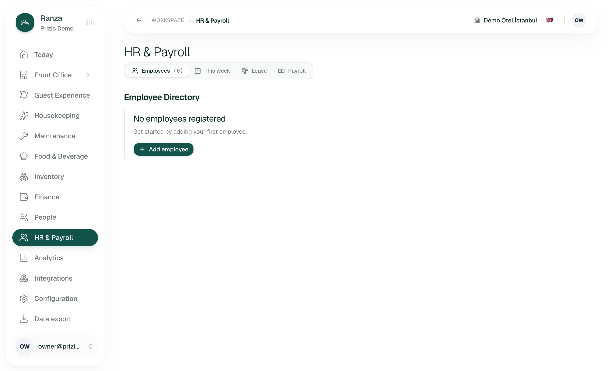
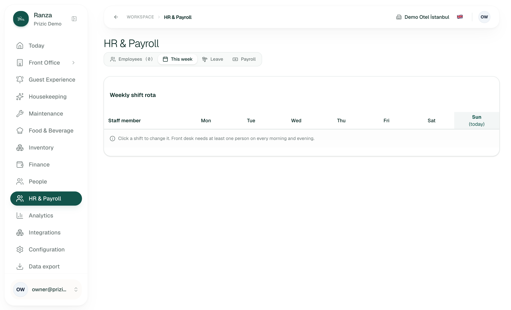
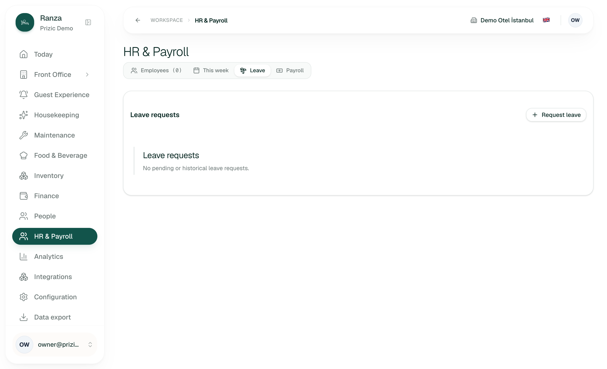
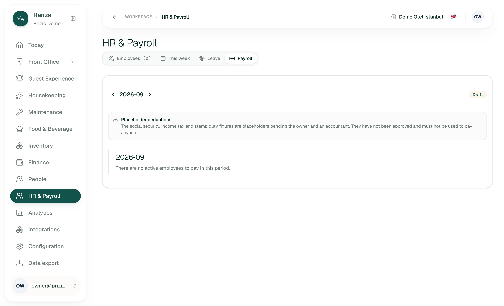
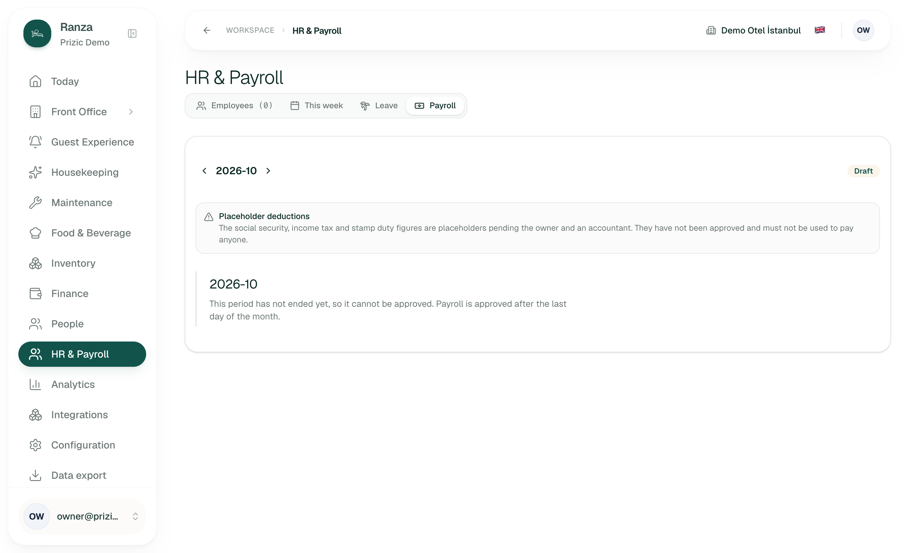
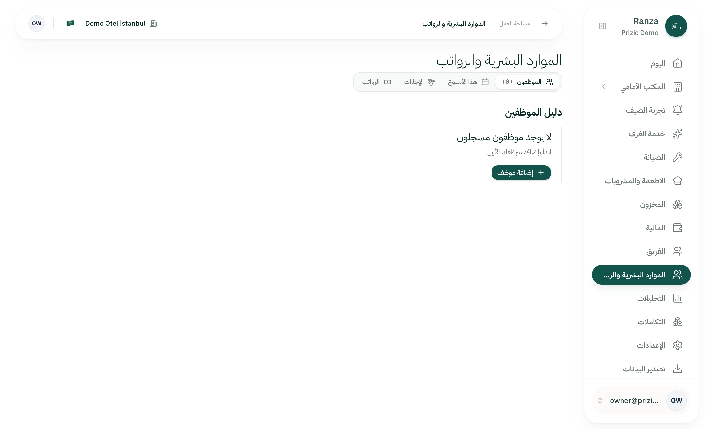
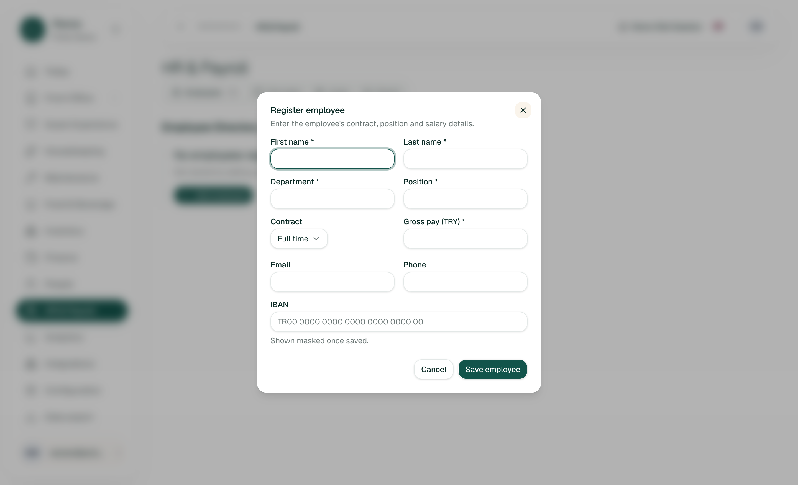
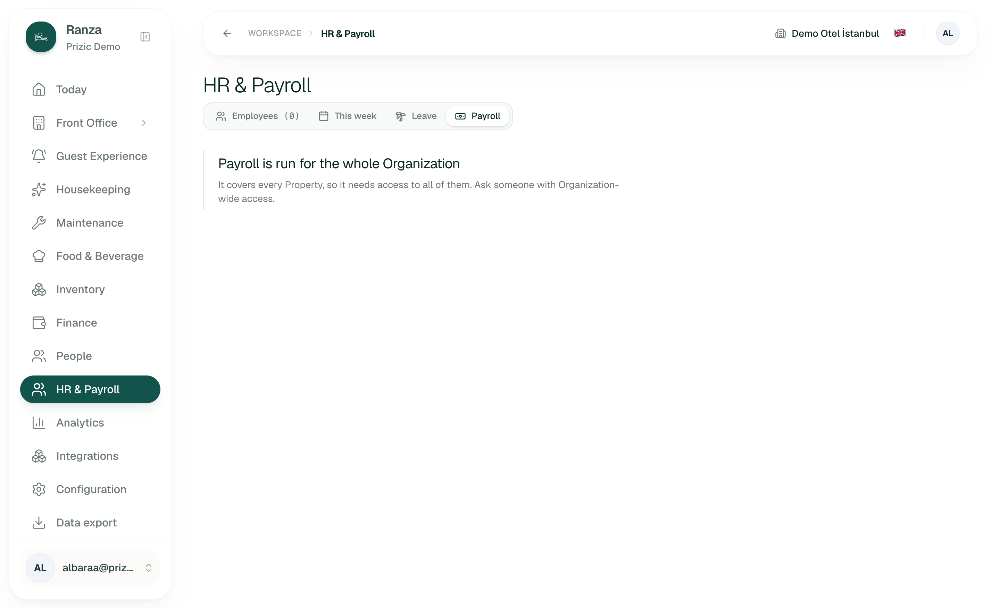
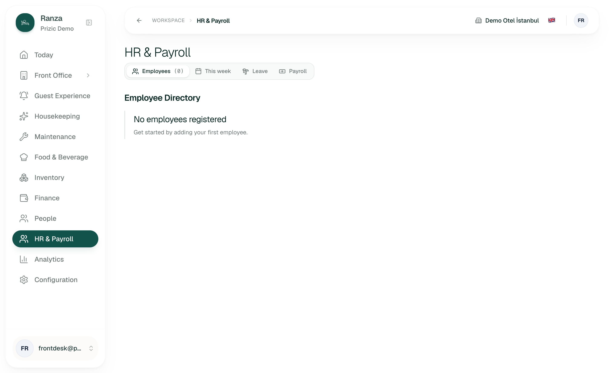
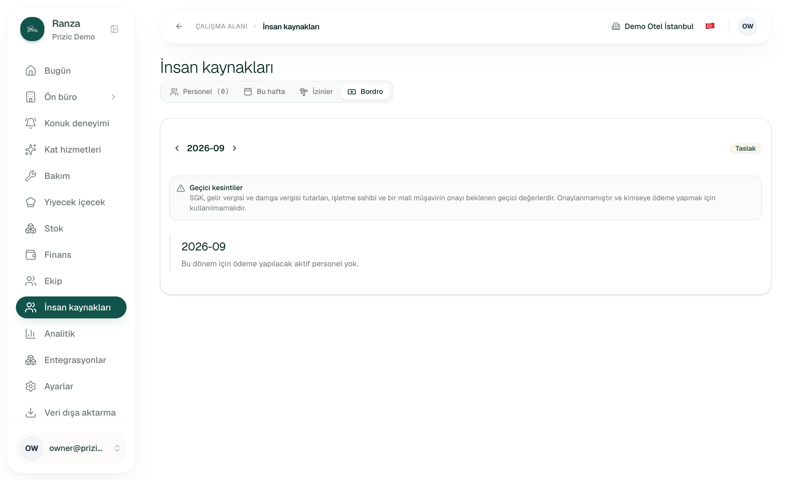
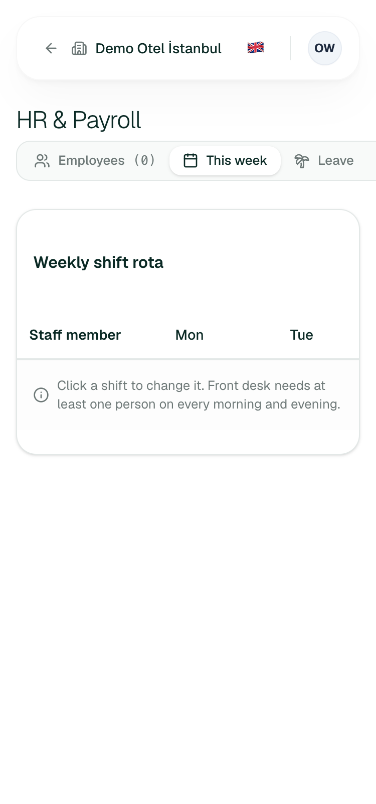
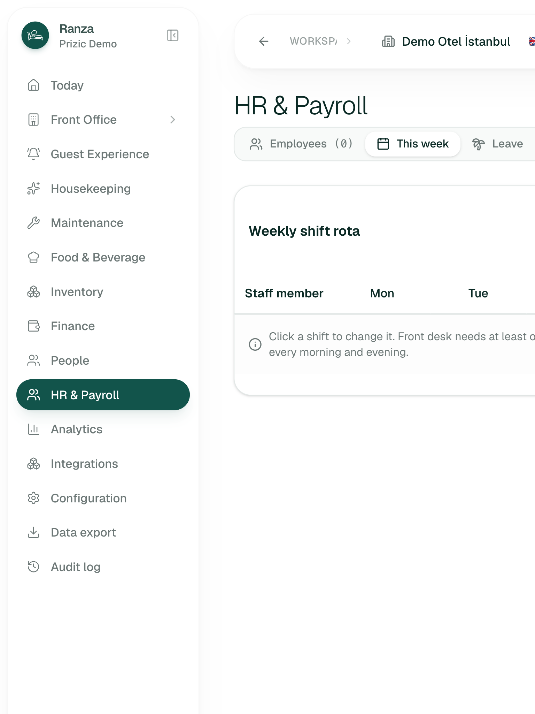
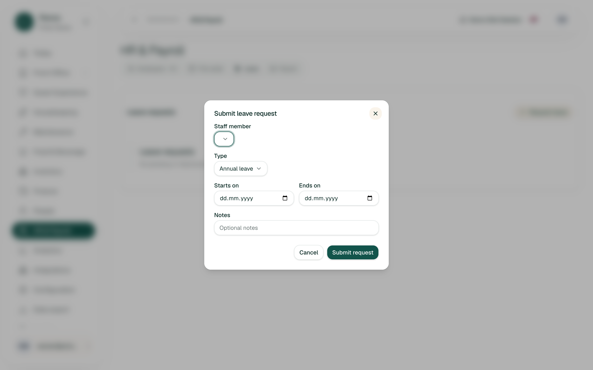